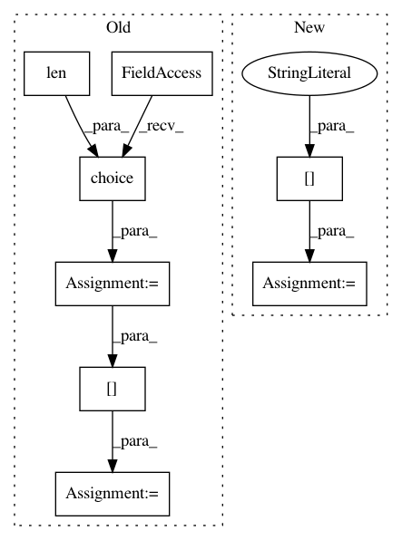

e8115b9d2ea60e3d7757f79fb028f778698f00fa,plasma/models/shallow_runner.py,,train,#Any#Any#Any#Any#,170
Before Change
print("Total data: {} samples, {} positive".format(len(X),np.sum(Y > 0)))
max_samples = 100000
num_samples = min(max_samples,len(Y))
indices = np.random.choice(np.array(range(len(Y))),num_samples,replace=False)
X = X[indices]
Y = Y[indices]
print("fitting on {} samples, {} positive".format(len(X),np.sum(Y > 0)))
After Change
print("validate: {} shots, {} disruptive".format(len(shot_list_validate),shot_list_validate.num_disruptive()))
print("training: {} shots, {} disruptive".format(len(shot_list_train),shot_list_train.num_disruptive()))
sample_prob = conf["data"]["shallow_sample_prob"]
feature_extractor = FeatureExtractor(loader)
shot_list_train = shot_list_train.random_sublist(debug_use_shots)
X,Y,_ = feature_extractor.load_shots(shot_list_train,sample_prob = sample_prob)
Xv,Yv,_ = feature_extractor.load_shots(shot_list_validate,sample_prob = sample_prob)
In pattern: SUPERPATTERN
Frequency: 3
Non-data size: 8
Instances
Project Name: PPPLDeepLearning/plasma-python
Commit Name: e8115b9d2ea60e3d7757f79fb028f778698f00fa
Time: 2017-05-31
Author: jk7@tigergpu.princeton.edu
File Name: plasma/models/shallow_runner.py
Class Name:
Method Name: train
Project Name: tryolabs/luminoth
Commit Name: 8dd1ec5bfef42af8ad75a38a4ac6d58e7d7763c9
Time: 2017-10-09
Author: javirey@gmail.com
File Name: luminoth/utils/image_vis.py
Class Name:
Method Name: draw_rpn_bbox_pred
Project Name: CyberReboot/NetworkML
Commit Name: a9e42a7f1d0ea64be0371a6f7aff5039b5a48f4f
Time: 2017-11-15
Author: CStephenson970@gmail.com
File Name: NodeClassifier/iterator.py
Class Name: BatchIterator
Method Name: gen_data